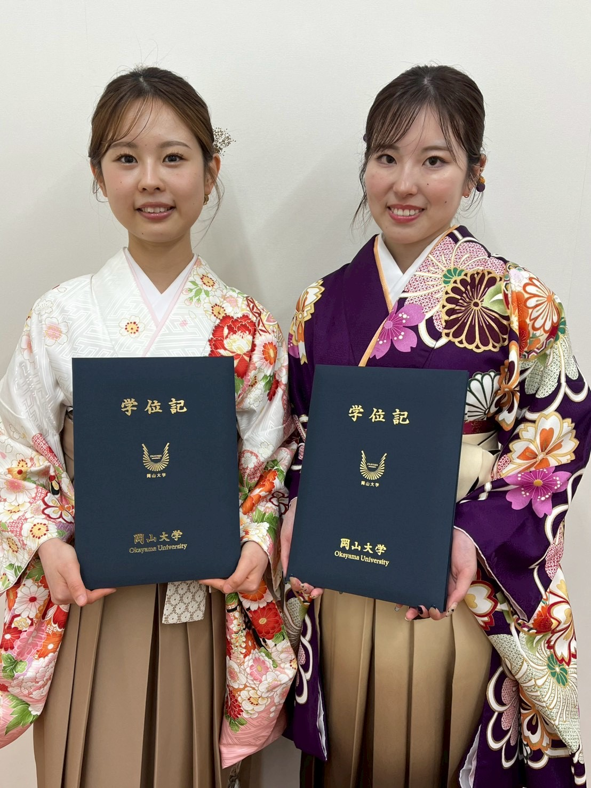
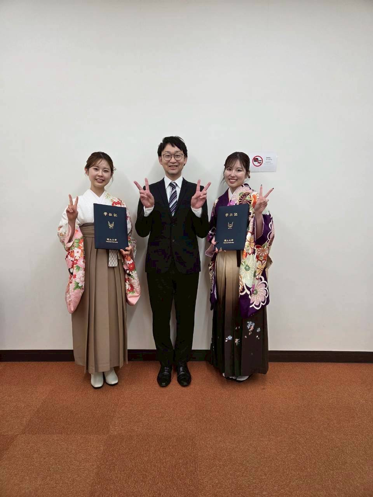

教育内容
本ゼミでは、クリティカルケア看護を基盤として、 文献レビュー、研究計画立案、プレゼンテーション指導を行い、 卒業研究の完成を目指します。
学部ゼミ生のテーマ
家村琴, 後藤香花（2024）：高度救命救急センターに配属された新人看護師のステップアップに対する入職前後の認識の違い ➡ 第21回日本クリティカルケア看護学会学術集会（口頭発表）
村田響紀, 沖田和花葉（2025）：集中治療の経験をもつ看護師が一般病棟で活用する能力や経験の実際
活動記録
2025年


2024年